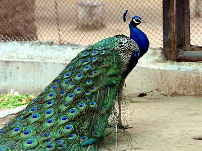

Peacocks are large, colorful pheasants (typically blue and green) known for their iridescent tails.
These tail feathers, or coverts, spread out in a distinctive train that is more than 60 percent of the bird’s total body length and boast colorful "eye" markings of blue, gold, red, and other hues. The large train is used in mating rituals and courtship displays. It can be arched into a magnificent fan that reaches across the bird's back and touches the ground on either side. Females are believed to choose their mates according to the size, color, and quality of these outrageous feather trains.
Peacocks are ground-feeders that eat insects, plants, and small creatures. There are two familiar peacock species. The blue peacock lives in India and Sri Lanka, while the green peacock is found in Java and Myanmar (Burma). A more distinct and little-known species, the Congo peacock, inhabits African rain forests.
